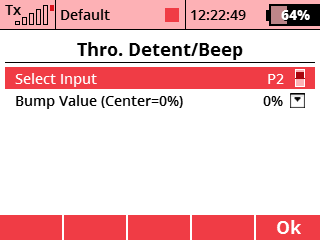

Tato aplikace spustí vibraci křížového ovladače a zapípá, jestliže je ovladač plynu umístěn v rámci několika procent od uživatelsky zadané pozice. Narozdíl od funkce Zvuků na událost, která je vestavěná ve vysílači a umí zapípat pouze, když je ovladač ve středové pozici, tato aplikace vám umožní spustit vibraci a pípnutí v libovolné pozici ovladače.
V menu zvolte položku Aplikace - Uživatelské aplikace. Stisknutím klávsy F(3) otevřete dialog pro výběr aplikací. Zde vyberte soubor "ThroBmp".
V nastavení aplikace si zvolte, jaký ovladač se bude brát jako vstup (P1-P4, ujistěte se, že je v proporcionálním režimu) a zadejte hodnotu (-100 až 100%), ve které by upozornění mělo být spuštěno.
Ovladač zavibruje a současně uslyšíte 100ms tón o frekvenci 430Hz, jestliže dosáhnete cílové pozice na ovladači +/- 1%. Vibrace se nespustí, dokud nepohnete ovladačem mimmo tuto pozici a zase zpět do ní.
Zdrojové kódy můžete stáhnout z oficiálního repozitáře JETImodel Lua-Apps GitHub.